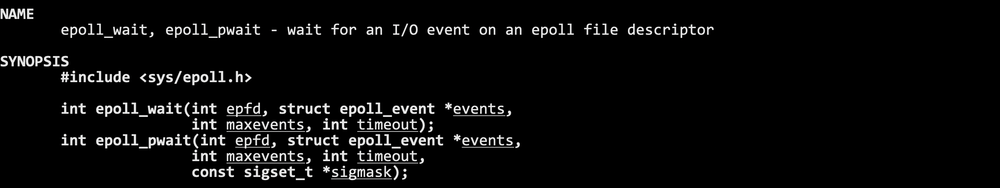
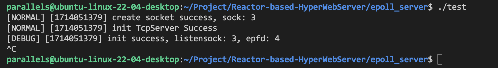
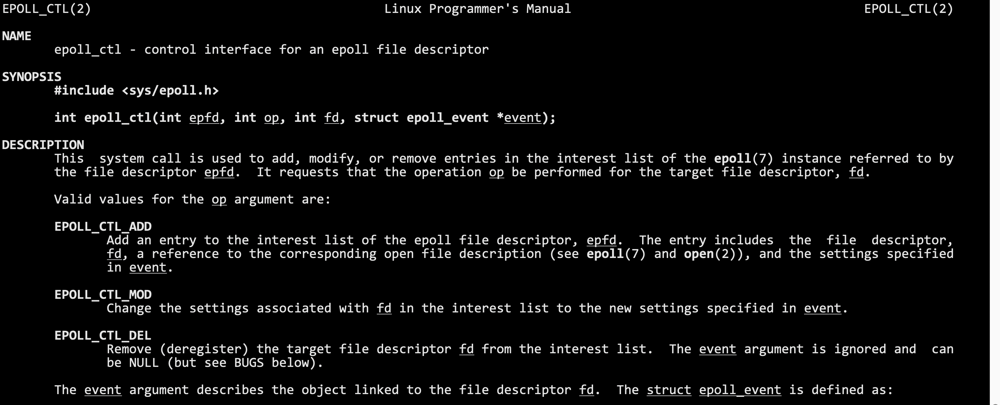
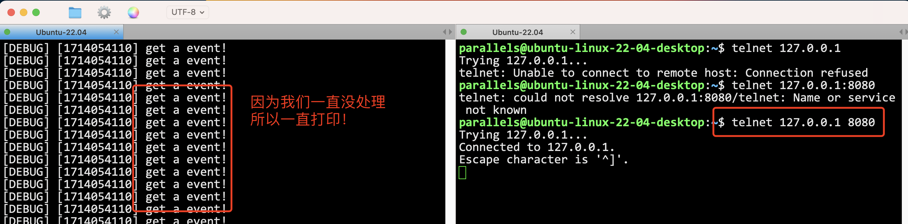
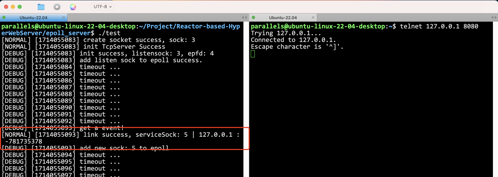
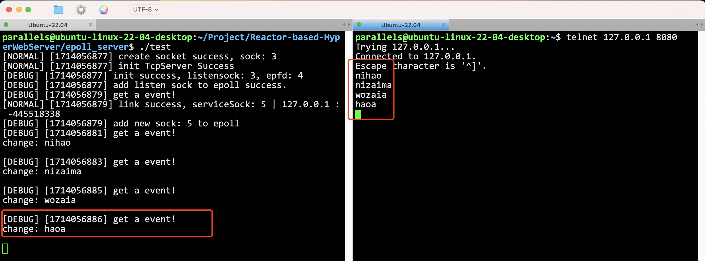

cite: https://blog.csdn.net/jgm20475/article/details/81083529
Linux中高级IO多路转接中select、poll和epoll的优缺点，这里主要谈select和poll的缺点以及epoll的优点。 一、select的缺点：
编写难度大
同时处理的文件描述符是有上限的
每次需要重新设定fd集合
性能会随用户的增多而效率降低
输入输出参数在一起
二、poll poll是对select的一种改良，最突出的改良有两点：
文件描述符数量没有上限
将输入输出参数进行分离，不用每次设定 那么poll的缺点是： poll中监听的文件描述符数目增多时： 1、和select一样，poll返回后，需要轮询pollfd来获取就绪的描述符 2、每次调用poll都需要大把大量客户端在一时刻可能只有很少的处于就绪状态，因此随着监视的描述符数量的增长，其效率也会线性下降。
三、epoll的优点：
文件描述符数目没有上限：通过epoll_ctl()来注册一个文件描述符，内核中使用红黑树的数据结构来管理所有需要监控的文件描述符。
基于事件就绪通知方式：一旦被监听的某个文件描述符就绪，内核会采用类似于callback的回调机制，迅速激活这个文件描述符，这样随着文件描述符数量的增加，也不会影响判定就绪的性能。
维护就绪队列：当文件描述符就绪，就会被放到内核中的一个就绪队列中，这样调用epoll_weit获取就绪文件描述符的时候，只要取队列中的元素即可，操作的时间复杂度恒为O(1)。
红黑树，是要有key的，文件描述符就是一个天然的key
用户只需要设置关系，获取结果即可，不用关心任何对fd或者event对管理细节
epoll为什么高效呢？-> 红黑树
底层只要有fd就绪了，OS会自己给我构建节点，链入到就绪队列中，上层只需要不断地从就绪队列中将数据拿走，就完成了获取就绪事件的任务
所以本质上：epoll是一个生产者消费者模型！
如果底层没有就绪事件呢？我们的上层应该怎么办？阻塞等待！（可以选择的！所以epoll_wait接口为什么有一个timeout参数，如果我选择不等，就直接返回->非阻塞了）

基本的东西先写好。
main.cc
int main() { std::unique_ptr<ns_epoll::epoll_server> svr(new ns_epoll::epoll_server()); svr->start(); return 0;}epoll_server.hpp
namespace ns_epoll {class epoll_server {};} // namespace yufc当然，以前写好的log.hpp, sock.hpp都要复制到目录里面。
这个很简单，直接写就行了，然后创建完监听套接字之后，就是要去创建epoll模型
epoll_server.hpp
epoll_server(const int& port = default_port) : __port(port) { // 1. 创建监听套接字 __listen_sock = Sock::Socket(); Sock::Bind(__listen_sock, __port); Sock::Listen(__listen_sock);
}因为为了后面方便使用，epoll模型封装一下比较好，封装成epoll.hpp
创建epoll。
epoll.hpp
class __epoll {public: static const int gsize = 256;
public: static int create_epoll() { int epfd = epoll_create(gsize); if (epfd > 0) return epfd; exit(5); }};epoll_create:RETURN VALUE On success, these system calls return a file descriptor (a nonnegative integer). On error, -1 is returned, and errno is set to indicate the error所以创建成功返回epfd，创建失败就没得玩了，直接终止。
所以此时继续epoll_server.hpp
epoll_server(const int& port = default_port) : __port(port) { // 1. 创建监听套接字 __listen_sock = Sock::Socket(); Sock::Bind(__listen_sock, __port); Sock::Listen(__listen_sock); // 2. 创建epoll模型 __epoll_fd = __epoll::create_epoll(); logMessage(DEBUG, "init success, listensock: %d, epfd: %d", __listen_sock, __epoll_fd); // 3, 4 }
符合预期，因为文件描述符0，1，2已经在用了。
现在可以Accept了吗？下面这个代码可以吗？不可以！
void start() { while (1) { int sock = Sock::Accept(); } }你怎么知道sock上已经有数据了？
多路转接的原则：不知道有没有数据的时候，不要去调用IO接口！
所以我们要：先将listen套接字添加到epoll中，让epoll去管理！
所以其实，epoll_server中的epoll模型，其实管理了两种sock，第一个叫做监听套接字，第二种叫做连接的套接字。
连接的套接字是越来越多的，但是listensock只有一个！epoll两种套接字都要管理！总结来说，多路转接中，任何文件描述符，都应该被管理！
怎么让epoll管理文件描述符呢？
认识一个接口。

参数：一句话搞定：让epfd这个epoll模型管理fd这个文件描述符，当fd中有event事件发生的时候，让epfd帮这个fd做op这个动作！
事件有哪些？可以查表。
常用的有这些。
EPOLLIN: 表示对应的文件描述符可以读(包括对端SOCKET正常关闭);
EPOLLOUT: 表示对应的文件描述符可以写;
EPOLLPRI: 表示对应的文件描述符有紧急的数据可读(这里应该表示有带外数据到来);
EPOLLERR: 表示对应的文件描述符发生错误;
EPOLLHUP: 表示对应的文件描述符被挂断;
EPOLLET: 将EPOLL设为边缘触发(Edge Triggered)模式,这是相对于水平触发(Level Triggered)来说的.
EPOLLONESHOT: 只监听一次事件,当监听完这次事件之后,如果还需要继续监听这个socket的话,需要再次把这个socket加入到EPOLL队列里。
所以epoll.hpp这样写。
static bool control_epoll(int epfd, int oper, int sock, uint32_t events) { struct epoll_event ev; ev.events = events; ev.data.fd = sock; int n = epoll_ctl(epfd, oper, sock, &ev); return n == 0; }epoll_sever.hpp这样调用。
xxxxxxxxxx__epoll::control_epoll(__epoll_fd, EPOLL_CTL_ADD, __listen_sock, EPOLLIN);表示把__listen_sock这个fd ADD到epoll模型中，关心这个fd的EPOLLIN事件。
当然到后面就绪的文件描述符可能很多，所以我希望一次性可以拿完所有就绪的文件描述符。
所以在epoll_server.hpp里面维护一个
xxxxxxxxxxstruct epoll_event* __revs; // 后面epoll继续的元素都会被放在这里int __revs_num; // __revs的大小先把数组空间开好，然后到时候就绪的一起都拿出来。
epoll.hpp
xxxxxxxxxx static int wait_epoll(int epfd, struct epoll_event revs[], int num, int timeout) { return epoll_wait(epfd, revs, num, timeout); }epoll_server.hpp
xxxxxxxxxx void loop_once(int timeout) { /** * timeout表示，外部决定，到底这个epoll_wait最多阻塞多久，可以选择不阻塞，可以选择阻塞的事件 */ int n = __epoll::wait_epoll(__epoll_fd, __revs, __revs_num, timeout); switch (n) { case 0: logMessage(DEBUG, "timeout ..."); break; case -1: logMessage(WARNING, "epoll wait error; %s", strerror(errno)); break; default: // epoll这一次成功等到了就绪的fd了！ break; } } void start() { int timeout = 1000; while (true) loop_once(timeout); }当timeout为0的时候，叫做非阻塞等待！当timeout为-1的时候，叫做阻塞式等待！
一次loop_once就应该这样写，如果wait_epoll成功了，就表明这一次loop等到了就绪的文件描述符！
细节1: 如果底层就绪的sock非常多，revs放不下了，怎么办？
不影响，一次拿不完就下一次loop再拿就行！
细节2: 关于epoll_wait返回值的问题
表示有几个fd上的事件就绪，就返回几 但是epoll_wait的处理特别特别的优雅，epoll返回的时候，会将所有就绪的fd按照顺序放到revs数组中！一共有返回值个！很优雅！

因为我们一直没处理这个继续的套接字，所以一直打印！
怎么处理，我们搞一个handler_event(n)就可以了！只需要传一个数字，告诉我处理几个就行了，因为东西都存在revs数组里面了！
epoll_server.hpp
xxxxxxxxxx void handler_event(int n) { for (int i = 0; i < n; i++) { uint32_t revents = __revs[i].events; int sock = __revs[i].data.fd; // 这个就是就绪（什么事件就绪呢，看下面）的文件描述符！ // 此时如果我去对这个fd做访问，一定不会阻塞 // 如果是listensock，就去accept，此时accept不会阻塞！ // 如果是普通的sock，那我们就读取发过来的信息就好了！ // 读事件就绪了！ if (revents & EPOLLIN) { // 1. listensock 就绪 // 2. 普通的sock就绪 - read if (sock == __listen_sock) Accepter(); else Recver(); } } }xxxxxxxxxx void Accepter(int listen_sock) { // accept这个监听套接字 } void Recver(int sock) { // 读取这个普通套接字里面的内容 }Accepter这样写
xxxxxxxxxx void Accepter(int listen_sock) { // accept这个监听套接字 std::string client_ip; uint16_t client_port; int accept_errno = 0; int sock = Sock::Accept(listen_sock, &client_ip, &client_port, &accept_errno); if (sock < 0) { logMessage(WARNING, "accept error!"); return; } // 此时能不能直接读取？不能，因为并不清楚是否有数据！ // 交给epoll！ if (__epoll::control_epoll(__epoll_fd, EPOLL_CTL_ADD, sock, EPOLLIN)) { logMessage(DEBUG, "add new sock: %d to epoll", sock); } else { return; } }总之，成功Accept上来的sock是不能直接读取的！因为不知道有没有数据！所以交给epoll就行！
测试一下。

Recver这样写
xxxxxxxxxx void Recver(int sock) { // 读取这个普通套接字里面的内容 // 1. 读取数据 // 2. 处理数据 char buffer[10240]; size_t n = recv(sock, buffer, sizeof(buffer) - 1, 0); if (n > 0) { // 假设这里就是读到了一个完整的报文 buffer[n] = 0; __handler_request(buffer); // 进行回调！ } else if (n <= 0) { // 对端关闭文件描述符 // 让epoll不再关注这个文件描述符 // 一定要先从epoll中去掉，才能close文件描述符 bool res = __epoll::control_epoll(__epoll_fd, EPOLL_CTL_DEL, sock, 0); assert(res); // 保证是成功的，因为一般来说都是成功的，所以直接assert (void)res; close(sock); if (n == 0) logMessage(NORMAL, "client %d quit, me quit too ...", sock); else if (n < 0) logMessage(NORMAL, "client recv %d error, close error sock", sock); } }这里有坑！一定要先从epoll中去掉，才能close，因为epoll中的fd都是合法的！
把回调方法搞好之后，epoll服务器我们就搞定了
main.cc
xxxxxxxxxxvoid change(std::string request) { // 完成业务逻辑 std::cout << "change: " << request << std::endl;}
int main() { std::unique_ptr<ns_epoll::epoll_server> svr(new ns_epoll::epoll_server(change)); svr->start(-1); // 先暂时让他阻塞等待 return 0;}
epoll服务器回调了方法。
肯定还是有问题的。
首先，如何保证Recver读到了完整的报文，这些都很熟悉了，都是要去解决的问题！
epoll有两种工作模式，水平触发（LT）和边缘触发（ET）
LT模式: 如果我手里有你的数据，我就会一直通知 ET模式: 只有我手里你数据是首次到达，从无到有，从有到多(变化)的时候，我才会通知你
细节:
我为什么要听ET模式的?凭什么要立刻去走？我如果不取，底层再也不通知了，上层调用就 无法获取该fd的就绪事件了，无法再调用recv， 数据就丢失了。倒逼程序员，如果数据就绪， 就必须一次将本轮就绪的数据全部取走。
我可以暂时不处理LT中就绪的数据吗?可以! 因为我后面还有读取的机会。
如果LT模式，我也一次将数据取完的话，LT和ET的效率是没有区别的。
ET模式为什么更高效?
更少的返回次数（毕竟一次epoll_wait都是一次内核到用户）
ET模式会倒逼程序员尽快将缓冲区中的数据全部取走，应用层尽快的去走了缓冲区中的数据，那么在单位时间下，该模式下工作的服务器，就可以在一定程度上，给发送方发送一 个更大的接收窗口，所以对方就可以拥有一个工大的滑动窗 口，一次向我们发送更多的数据，提高IO吞吐。
结论：et模式一定要是非阻塞读取。为什么？
首先，et模式要一次全部读完！怎么才能一次读完呢？我都不知道有多少，怎么保证一次读完？所以我们要连续读，一直读！循环读！读到没有数据为止！
ok！读到没有数据, recv就会阻塞！这就不行了，我们不允许阻塞！
所以怎么办？把这个sock设置成非阻塞的sock，这种sock有个特点：一直读，读到没数据了，不阻塞！直接返回报错，报一个错误：EAGAIN。而这个EAGAIN，可以告诉我们，读完了！